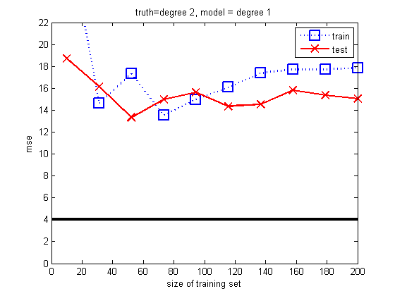
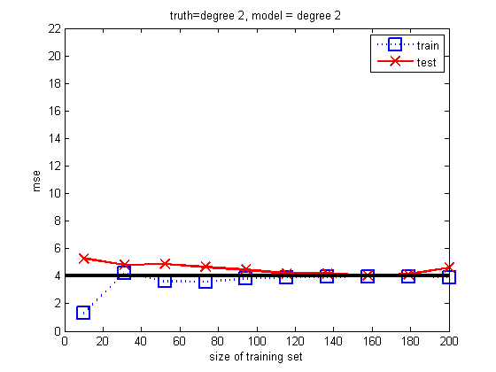
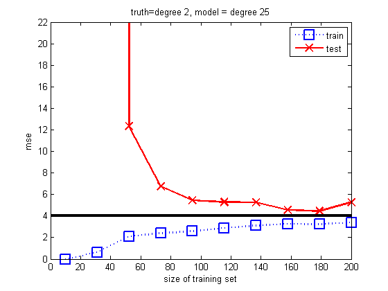

Plot performance of linear regression vs sample size
Contents
setSeed(0);
degrees = [1, 2, 25];
for d=1:numel(degrees)
deg = degrees(d);
lambda = 0;
ns = linspace(10, 200, 10);
Nns = length(ns);
testMse = zeros(1, Nns);
trainMse = zeros(1, Nns);
for i=1:length(ns)
Generate data
n=ns(i);
[xtrain, ytrain, xtest, ytestNoiseFree, ytest, sigma2] = ...
polyDataMake('n', n, 'sampling', 'thibaux');
Transform data
[xtrain, minx, rangex] = rescaleData(xtrain, -1, 1);
xtest = rescaleData(xtest, -1, 1, minx, rangex);
xtrain = addOnes(degexpand(xtrain, deg));
xtest = addOnes(degexpand(xtest, deg));
Fit
model = linregFit(xtrain, ytrain, 'lambda', lambda, ...
'preproc', struct('standardizeX', false));
Predict
yhatTrain = linregPredict(model, xtrain);
trainMse(i) = mean((ytrain - yhatTrain).^2);
yhatTest = linregPredict(model, xtest);
testMse(i) = mean((ytest - yhatTest).^2);
end
Plot
figure();
hold on
ndx = ns;
plot(ndx, trainMse, 'bs:', 'linewidth', 2, 'markersize', 12);
plot(ndx, testMse, 'rx-', 'linewidth', 2, 'markersize', 12);
legend('train', 'test')
ylabel('mse')
xlabel('size of training set')
title(sprintf('truth=degree 2, model = degree %d', deg));
set(gca,'ylim',[0 22]);
box on;
horizontalLine(sigma2, 'color', 'k', 'linewidth', 3);
printPmtkFigure(sprintf('polyfitN%d', deg));
  
end